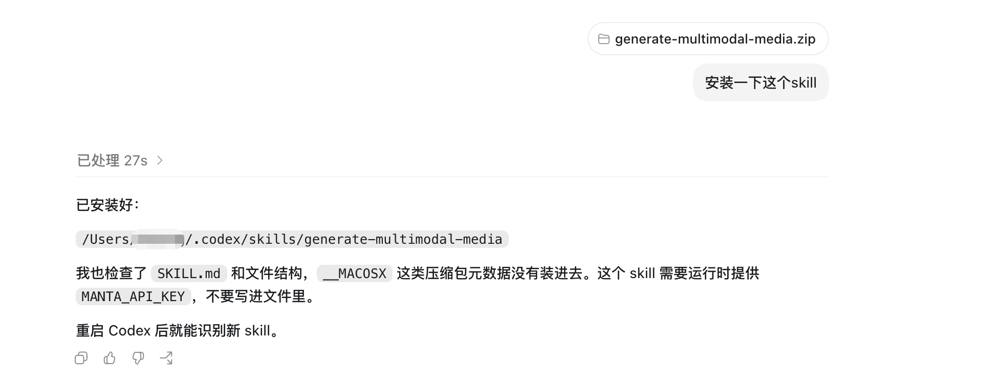

工具使用
Skill 安装指南
INSTALL AGENT SKILLS FOR AI CO-CREATION
Skill 是 AI Agent 的可复用能力模块。安装后，Agent 可以在对话中自动调用对应能力完成设计工坊引导、图片生成、视频制作等任务。
1
下载 Skill 包
根据需要下载以下 Skill 包，解压后将整个文件夹放入你的项目中即可被 Agent 识别。
WORKSHOP
Future Design Thinking Workshop
设计工坊 Skill。引导用户完成未来设计思维工作坊的完整流程：从未来信号发现、STEEP 分析、本地挑战定义，到 Interpretation 生成、Tomorrow Headline 和 Backcasting 路线图。
下载 Skill 包
MEDIA
Generate Multimodal Media
图片与视频生成 Skill。通过 mantai LLM API 调用 gpt-image-2 生成/编辑图片，调用 Seedance 2.0 生成文生视频、图生视频等多模态内容。
下载 Skill 包
2
在 Codex 中安装 Skill
打开 Codex，将下载的 Skill zip 包直接发送到对话中，然后告诉 Codex「安装一下这个 skill」。Codex 会自动完成解压和安装。

安装完成后，重启 Codex 即可识别新 Skill。